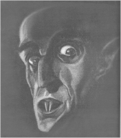

Contents | Features | Reviews | News | Archives | Store

Contents | Features | Reviews | News | Archives | Store
|  | All Our Nosferatus, or, Meeting the Shadows by Gregory Avery |
Gregory Avery takes a look at the 1922 film Nosferatu: A Symphony of Terror and its legacy. Follow the links below ...
Contents | Features | Reviews
| News | Archives | Store
Copyright © 1999 by Nitrate Productions, Inc. All Rights Reserved.